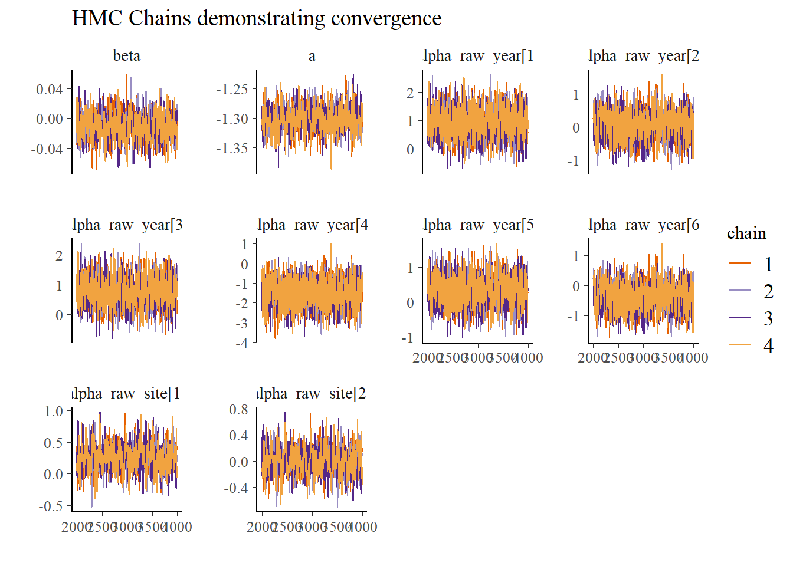
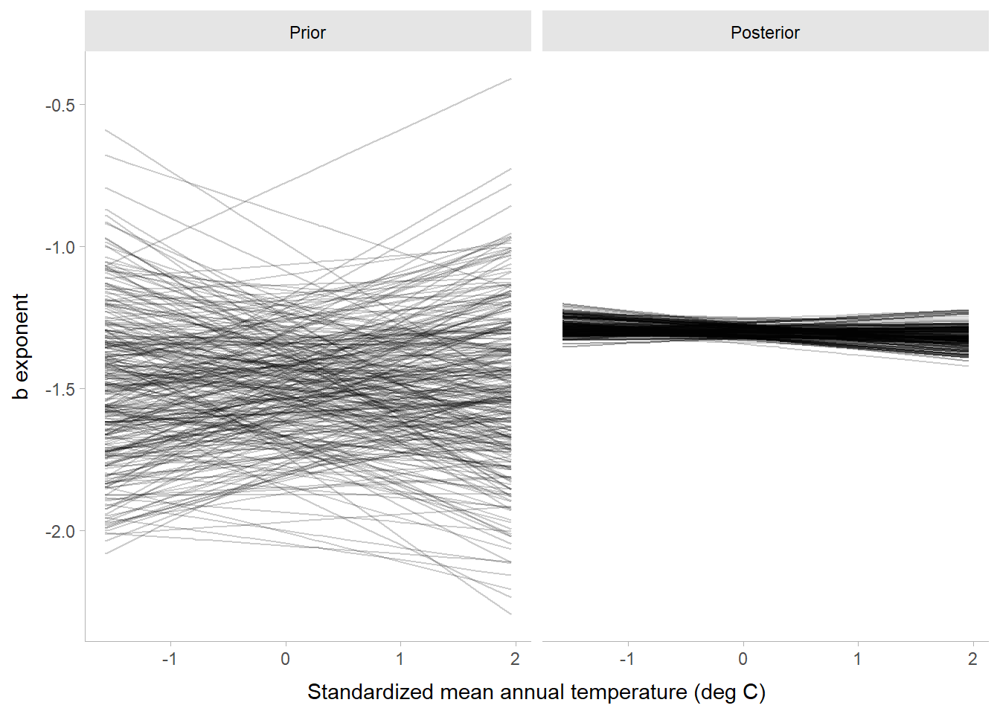
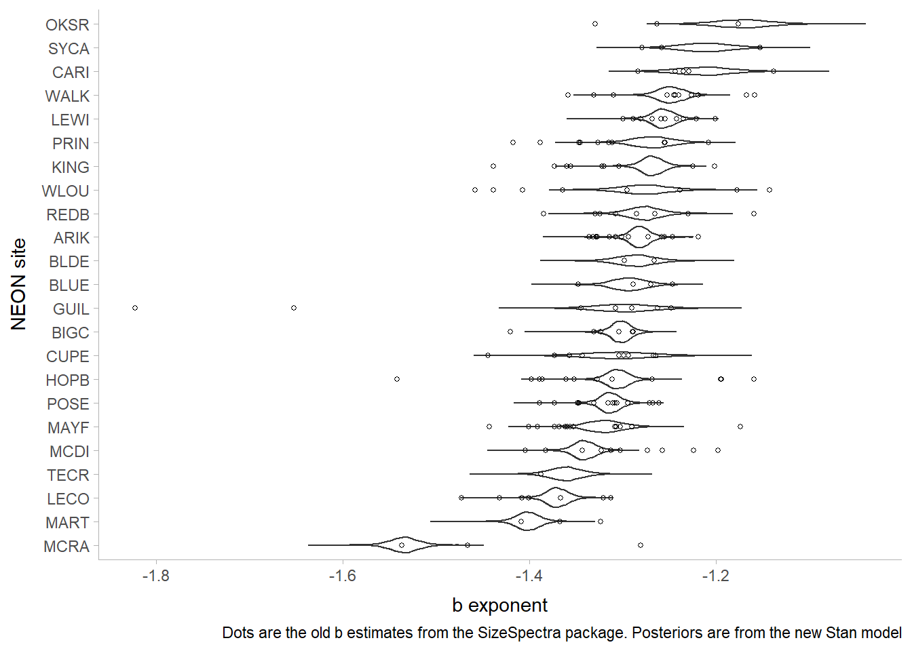
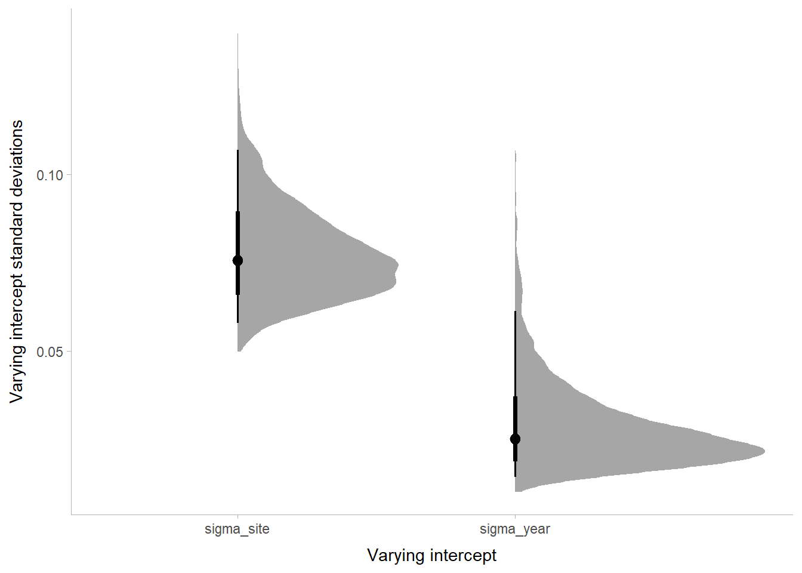

# A tibble: 6 × 7
dw no_m2 mat_s year site xmin xmax
<dbl> <dbl> <dbl> <dbl> <int> <dbl> <dbl>
1 0.0001 8 -1.57 2017 5 0.0001 52885.
2 0.0001 4 -1.55 2019 16 0.0001 90302.
3 0.0001 22 -1.33 2018 23 0.0001 13160.
4 0.0001 11 -1.33 2018 23 0.0001 15993.
5 0.0001 105 -0.808 2016 19 0.0001 37044.
6 0.0001 167 -0.313 2017 8 0.0001 14204.bayes_spectra
A Bayesian hierarchical model for size spectra
Jeff S. Wesner, Justin P.F. Pomeranz, Jim Junker, Vosjava Gjoni
University of South Dakota, Department of Biology, Vermillion, SD 57069
Colorado Mesa University
Louisiana University Marine Consortium
Abstract
Keywords: Bayesian, body size spectra, pareto
Introduction
The distribution of individual body sizes in an ecosystem is approximated by a bounded power law with a single free parameter b, corresponding to the following probability density function (Edwards et al. 2020):
\[ f(x) = Cx^b, x_{min} <= x >= x_{max} \tag{1}\]
where x is the body size (e.g., mass or volume) of an individual in the community collected out of X total individuals, regardless of taxon. xmin is the smallest individual in the collection X and xmax is the largest individuual. C is a constant equal to:
\[ C = \frac{b + 1}{{x_{max}^{b+1}} - {x_{min}^{b+1}}}, \text{when b is not} -1 \]
or
\[ C = \frac{1}{{logx_{max}^{b+1}} - {logx_{min}^{b+1}}}, \text{when b is} -1 \]
This model is also known as the bounded power law or truncated Pareto distrubution. The terms “bounded” or “truncated” refer to the limits of xmin and xmax. Without those limits, the function is a simple power law. Each term in the equations above comes directly from the data except for the exponent b. It is the only free parameter in this model and needs to be estimated with a statistical model. By comparison, in a Gaussian model there are two free parameters that need statistical estimation, the mean \(\mu\) and standard deviation \(\sigma\).
To fit this model requires a single column of data in which each data point is a single measure of the body size of an individual. As long as the body sizes are collected systematically and without bias towards certain taxa or phenotypes, there is no need to know any more ecological information about the data points (e.g., taxon, trophic position, age, abundance, etc.). The aim of the model is to estimate b, which quantifies the relative frequency of large to small body sizes in the community. For example, a b value of -2.4 would be “steeper” than a b value of -1.4. That indicates that the community with -2.4 has a higher abundance of small individuals relative to large individuals than the community with -1.4. b is unitless, but caries with it important ecological information. In size-structured aquatic ecosystems, the relative abundance of small to large individuals is governed, in part, by trophic efficiency, helping to explain why large organisms are less abundant than small organisms. In other words, changes in b among space and time can indicate changes in energy flux through the food web, assuming constant resource supply and no allochthonous subsidies.
One source of confusion when fitting individual size distributions (ISD) that there is no term for abundance. This is confusing because the theoretical predictions for body size distributions rely on the assumption that large organisms are less abundant than small organisms. It seems natural to include data on abundance, though it is not needed to fit an ISD. Nevertheless, most methods for estimating the parameter b include an abundance estimate. However, that estimate comes at the cost of binning, and the methods for binning vary widely among studies, creating confusion in the literature (Edwards et al. 2017). In most cases, all organisms in a given size range, such as 10-100 grams dry mass) are lumped into a single bin. Then the abundance of organisms in that bin is tallied, giving the two desired measures, abundance and body size. These data are then fit using log-log regressions with a Gaussian likelihood, and the slope of that regression is assumed to represent the b exponent of a power law.
The benefit of the binning approach is that b can be estimated from a simple linear regression model, which ecologists are familiar with. However, binning also condenses a wide range of body sizes into a single bin. For example, their may be 500 individual body sizes between 10-100 grams, but when those are binned into a midpoint of, say 45, all of the variation in these sizes is removed. In essence, binning changes the analysis so that it is no longer measuring the ISD (White et al. 2007, Edwards et al. 2017). The resulting estimates of b can differ widely from the true value that the models intend to estimate, sometimes even being a different sign (Edwards et al. 2017, Pomeranz et al. in prep).
An improved alternative to binning and linear regression is to fit the body size data to a power law probability distribution directly (White et al. 2007, Edwards et al. 2017/2020). This method uses all of the data without binning and directly estimates the parameter of interest, b. Edwards et al. (2017/2020) published the likelihood for a bounded power law that estimates b, including an alternative that accounts for data that are not strictly continuous, such as weights rounded to the first decimal. These methods are well documented in the sizeSpectra package in R. However, it is only possible to fit the models to single dataset using maximum likelihood. To our knowledge there is no current method to fit ISD models to multiple groups of ISD’s, such as data collected from multiple sites or multiple years.
Here, we expand the model of Edwards et al. (2020) so that it can include both fixed and random predictor variables. The model allows for a flexible hierarchical structure within the modeling language Stan.
Methods
Edwards et al. (2020) derived the likelihood equation for a bounded power for data that include density estimates for each body size. These data are technically binned, but only to the extend that the body size measures are rounded. In other words, if two individuals are measured as 0.25 mgDM, then they are added up so that the data included a mass of 0.25 and a density of 2 per unit area. The advantage of this is that any estimated body size collection can be combined so long as there is an areal estimate of its density. For example, fish collected with 3-pass removal and insects collected with a surber sample could be combined into a single data set by converting each body mass to mass per unit area. The resulting data set contains a column for each measured body size, a column for the density of those body sizes, and any other identifying data that could be used for fixed or random effects.
The resulting model has a log probability density of:
\[ counts*\log(\frac{b+1}{x_{max}^{b+1} - x_{min}^{b+1}}) + b*\log x, \text{when b is not -1} \]
and
\[ counts*\log(\log x_{min} - \log x_{max}) + b*\log x, \text{when b = -1} \]
where \(x\) is an individual body size, \(x_{min}\) and \(x_{max}\) are the minimum and maximum measurements in the dataset. If there are multiple samples, then each sample will have its own \(x_{min}\) and \(x_{max}\). \(counts\) is the density or abundance of a given body mass value and \(log\) is natural log. We call this PDF the paretocounts distribution.
Given the paretocounts distribution, we can estimate \(b\) from a single dataset using the following model:
\[ x_i \sim paretocounts(b, x_{min}, x_{max}, counts) \]
\[ b = \alpha \]
\[ \alpha \sim Normal(\mu, \sigma) \]
The first line is the likelihood, the second line is the linear model , and the third line contains the priors. We can expand the second line to include linear predictors and random effects.
To test the performance of the model, we first fit data simulated from a bounded power law and attempted to recover the parameter values for \(b\). Next we fit a model to data from NEON that contained 23 sites collected multiple times in each of 5 years. The data contained 22,707 measurements of fish and invertebrate dry mass collected by NEON. The second model contained varying intercepts (aka random effects) for year and site along with a predictor variable of mean annual water temperature. It contained the following model structure.
\[ x_{i,j,k} \sim paretocounts(b, x_{min_{j,k}}, x_{max_{j,k}}, counts_{j,k}) \]
\[ b = \alpha + \beta mat_s + \alpha_{site} + \alpha_{year} \]
\[ \alpha \sim Normal(-1.5, 0.2) \]
\[ \beta \sim Normal(0, 0.1) \]
\[ \alpha_{site} \sim Normal(0, \sigma_{site}) \]
\[\alpha_{year} \sim Normal(0, \sigma_{year}) \]
\[ \sigma_{site} \sim Exponential(9) \]
\[ \sigma_{year} \sim Exponential(9) \]
Where \(x_{i,j,k}\) is a measure of the \(i\)th dry mass (mg) from the \(j\)th site on the \(k\)th date, and similarly for \(x_{min}\),\(x_{max}\), and \(counts\). Here, \(counts\) reflects a density estimate in units of number per square meter (no_m2). \(\alpha\) is the intercept, \(\beta\) is the slope relating the ISD exponent \(b\) to standardized mean annual stream temperature \(mat_s\), and \(\alpha_{site}\) and \(\alpha_{year}\) are varying intercepts for site and year with mean offsets of 0 and a standard deviation equal to \(\sigma_{site}\) and \(\sigma_{year}\).
A snippet of the dataset is below, with \(x\) represented by the column dw in units of milligrams of dry mass and \(counts\) represented by no_m2, the density of a given dry mass for each collection. Notice that xmin and xmax vary among sites.
The full dataset has 22,707 rows of data. The model uses these data to estimate the value of \(b\) along with its relation to mean annual temperature. In addition, by including the varying intercepts, the model estimates account for repeated sampling among sites through partial pooling. This makes estimates of \(b\) more conservative and less influenced by outliers. The model results in estimates of the overall average \(b\) via the intercept, a slope with temperature \(\beta\), and individual partially pooled estimates of site-specific and year-specific \(b\). Finally, the \(\sigma_{site}\) and \(\sigma_{year}\) values can be used to predict \(b\) in future sites and future years via the posterior predictive distributions.
We fit the model in rstan (Stan Development Team 2022) using 4000 iterations of 4 chains. Model convergence was checked by ensuring that all r-hats were <1.1. Prior values were determined using prior predictive simulation with values similar to those from Pomeranz et al. (2021). To ensure that the model likelihood was translated correctly from Edwards et al. (2020), we compared estimates of \(b\) using paretocounts with maximum likelihood estimates produced from the sizeSpectra package. Results were identical when run individually on single sites, indicating that the log probability distribution was correctly translated from sizeSpectra to Stan.
Results
Runtime
With 4000 iterations and 4 chains, the model took ~ 9.3 hours to run using multiple cores on the University of South Dakota’s computing cluster (Lawrence).
Model Convergence
The traceplot below shows good convergence. Only the first 10 parameters are shown, but all had Rhats <1.01.

# A tibble: 34 × 2
parameter Rhat
<chr> <dbl>
1 beta 1.00
2 a 1.01
3 alpha_raw_year[1] 1.00
4 alpha_raw_year[2] 1.01
5 alpha_raw_year[3] 1.00
6 alpha_raw_year[4] 1.00
7 alpha_raw_year[5] 1.01
8 alpha_raw_year[6] 1.01
9 alpha_raw_site[1] 1.00
10 alpha_raw_site[2] 1.00
11 alpha_raw_site[3] 1.00
12 alpha_raw_site[4] 1.00
13 alpha_raw_site[5] 1.00
14 alpha_raw_site[6] 1.00
15 alpha_raw_site[7] 1.00
16 alpha_raw_site[8] 1.00
17 alpha_raw_site[9] 1.00
18 alpha_raw_site[10] 1.00
19 alpha_raw_site[11] 1.00
20 alpha_raw_site[12] 1.00
21 alpha_raw_site[13] 1.00
22 alpha_raw_site[14] 1.00
23 alpha_raw_site[15] 1.00
24 alpha_raw_site[16] 1.00
25 alpha_raw_site[17] 1.00
26 alpha_raw_site[18] 1.00
27 alpha_raw_site[19] 1.00
28 alpha_raw_site[20] 1.00
29 alpha_raw_site[21] 1.00
30 alpha_raw_site[22] 1.00
31 alpha_raw_site[23] 1.00
32 sigma_year 1.00
33 sigma_site 1.00
34 lp__ 1.00Relationship with temperature
The plot below compares prior to posterior predictions of the relationship between mean annual temperature and \(b\) exponents. The difference in the spread of the lines is a proxy indicator of how much information was learned from the data.

The table below shows the parameter estimates of the intercept and slope (beta). As with previous analyses, beta is small with wide variation indicating a 95% probability of being between -0.04 and 0.02. Because these values are based on standardized estimates, they suggest that across the entire range of temperatures, \(b\) changes by less than about 0.1 absolute units, a minimal change. The slope is slightly more negative than positive, but with only a 74% probability of being negative.
# A tibble: 2 × 7
name value .lower .upper .width .point .interval
<chr> <dbl> <dbl> <dbl> <dbl> <chr> <chr>
1 a -1.30 -1.34 -1.26 0.95 median qi
2 beta -0.0112 -0.0442 0.0232 0.95 median qi Variation among sites
Using the varying intercepts, we can make predictions of the mean \(b\) for individual sites. The plot below shows those predictions along with dots generated from a previous analysis using the MLE method in sizeSpectra. (NOTE: dots need to be updated with current data that has been fixed for no_m2 sums).

Which contributes the most to residual variation (year or sites)?
Comparing the varying intercept standard deviations demonstrates which of the groupings (site versus year) contributes most to residual variation in \(b\). The plot below shows that sites contribute ~2x more variation. The have an sd of 0.8, indicating that an average site is +/- 0.8 units from the intercept value of -1.3. By contrast, variation among years is about 0.3.

Posterior predictive checks
TBD
Supplementary Information
Run model on simulated data and ensure that parameters are recovered (they are, just need to add)
Run model in individual sites and compare with results from sizeSpectra package
Derive posterior predictive equation. The current method works, but may not capture the influence of counts (no_m2) correctly. Need help on this.